Physicist by training. Builder by instinct. I develop experimental systems, explore intelligent robotics, and turn complex ideas into tangible results.
Different disciplines. One approach: understand the problem, build the system, test the limits, improve it.
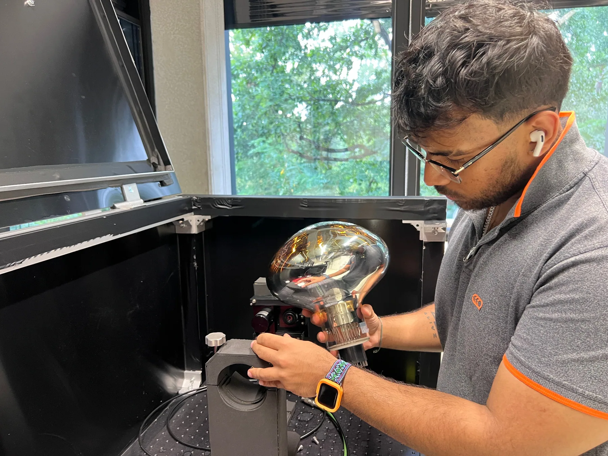
FAU / ECAP · MASTER'S RESEARCH
2024—2026
EXPERIMENTAL PHYSICS
INSTRUMENTATION
PYTHON
From a black box to a scientific measurement system.
Designed, built and automated a quantum-efficiency characterization setup for recovered ANTARES photomultiplier tubes — from hardware integration and calibration to quality control and physics results.
Could photomultipliers recovered from a deep-sea neutrino telescope work again in a future gamma-ray observatory? The answer started with building the apparatus to find out.
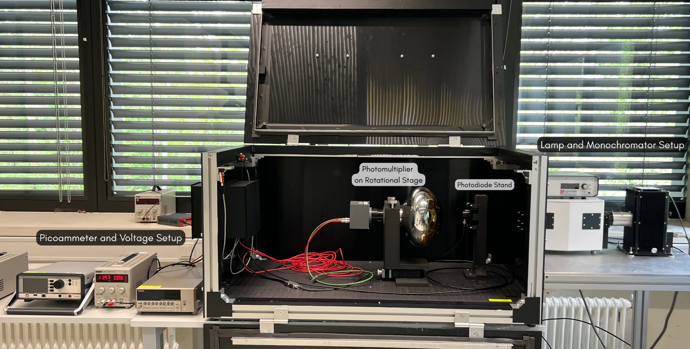
THE REAL SETUP · EXPERIMENTAL INSTRUMENTATION
PMT & ROTATION STAGE
INTERACTIVE RESEARCH / ST5937
Explore the PMT in 3D.
Rotate a connected Hamamatsu R7081-20 model and explore measured, calibrated ST5937 QE at 370 nm. Toggle high-contrast and full-range color scales in the interactive viewer.
Calibrated QE (%) from the processed ST5937 angular scans at 370 nm. The map is interpolated between measured directions; the PMT profile is a research visualization.
PMT alignment · working inside the experimental enclosure
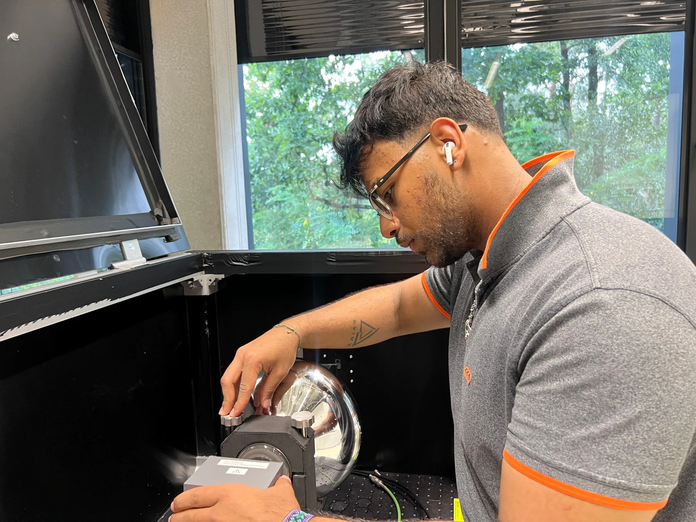
Precision positioning and alignment
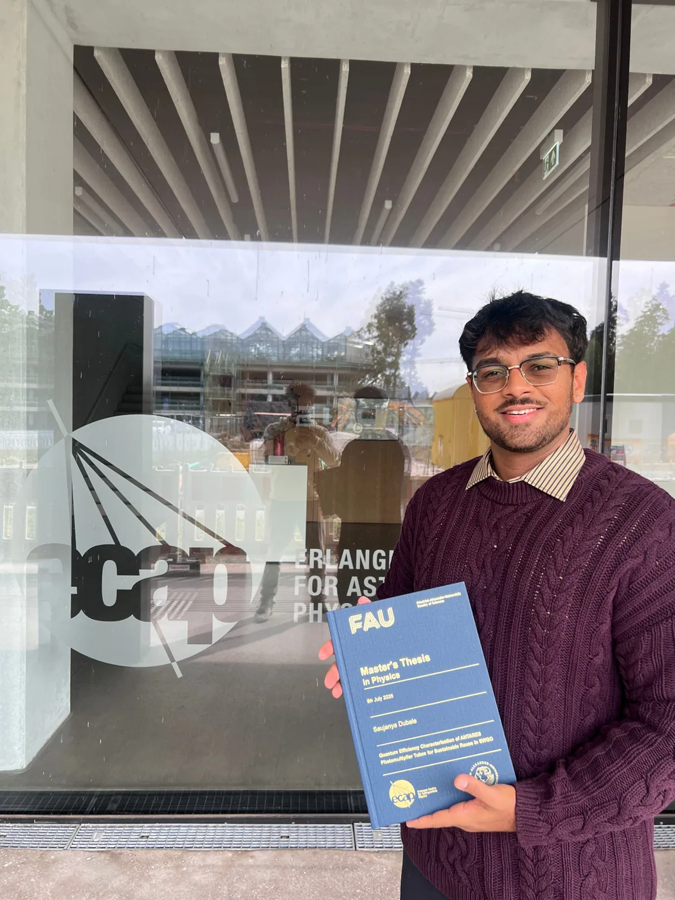
Master's thesis · FAU / ECAP
FROM PHOTONS TO PHYSICS / REAL EXPERIMENT
Follow the measurement chain.
Explore how I connected optical hardware, calibrated detector readout, Python acquisition and quality control into a reproducible quantum-efficiency pipeline.
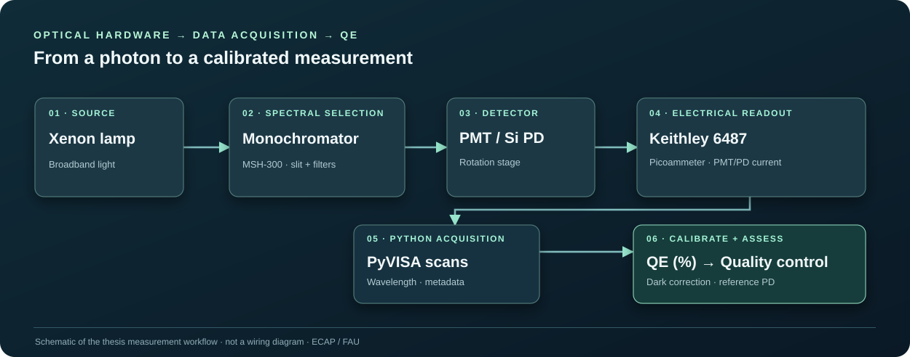
Measurement-chain schematic · select any stage below to explore the implementation.
STEP 01 / 07
A controlled light source
A xenon lamp supplies the optical source. A monochromator subsequently selects wavelength for the PMT and reference photodiode scans.
Local schematic reconstructed from the experimental workflow; labeled apparatus photograph is bundled with this website. No external Drive access needed.
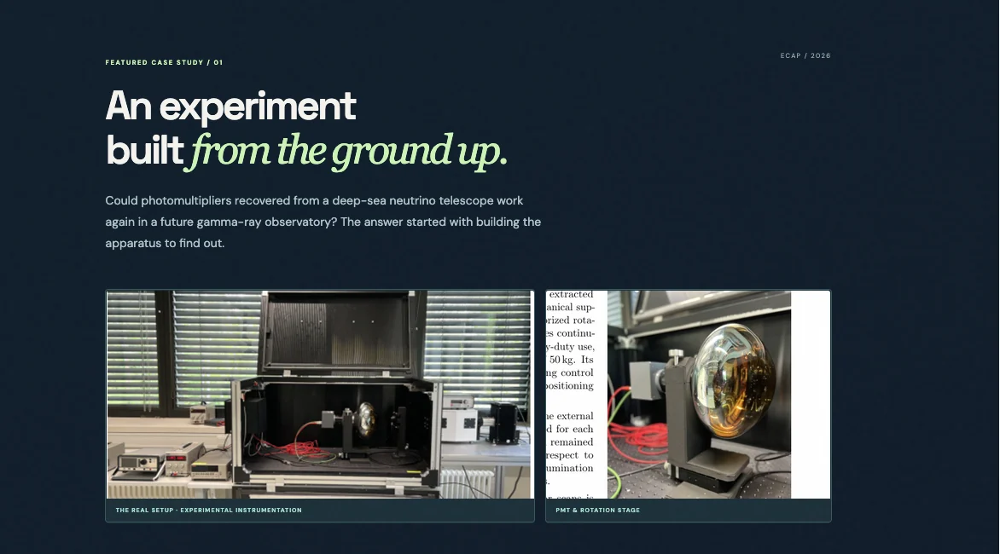
01 / BUILD
Make the hardware work.
Light-tight optical enclosure, xenon light source, monochromator, photodiode, picoammeter and motorized stage — integrated into one working measurement chain.
Quantum-efficiency analysis, statistical QC, anomaly detection and angular response mapping to support responsible reuse decisions.
THE FINDING
Most sensors still had a story to tell.
The clean population had a median peak quantum efficiency near 25.4%. The quality-control workflow classified 87 measured PMTs as suitable for first-stage optical interpretation — not a declaration of full deployment readiness.
Measuring a detector is only half the task. I built a data-quality pipeline to identify unstable spectral shapes, track artifacts, and make reuse assessments reproducible rather than relying on peak QE alone.
01 / VERIFY
Clean the measurements
Dark-current correction, wavelength consistency, the 400 nm slit-transition boundary, and suspect spectral artifacts.
02 / EXTRACT
Characterize each spectrum
Peak QE and wavelength, FWHM, band-integrated response, total variation, red-tail rise, shifts, and localized kinks.
03 / DETECT
Evaluate shape anomalies
Rule-based flags combined with PCA reconstruction error and a weighted spectral-shape score to surface unusual curves.
04 / CLASSIFY
Support interpretation
GOLD, SILVER, BRONZE and REVIEW tiers, followed by comparison against reference and reuse-relevant QE indicators.
124 + referencefull evaluation population
87clean spectra used for selected population statistics
4 tiersGOLD · SILVER · BRONZE · REVIEW, with a separate inspection group
THE EVIDENCE / RECREATED & SOURCE PLOTS
What the quality-control analysis revealed.
The tier chart is redrawn from the reported counts. The other figures are the original data-bearing plots, restyled for a dark presentation without modifying measurements or point locations. Open any figure for full-size inspection.
04 / Three reuse-relevant QE indicatorsPeak, 300–500 nm mean, and Cherenkov-weighted response against benchmarks
Interpretation note: the QC tiers and the 87-spectrum clean statistical subset represent different selection views; a GOLD/SILVER/BRONZE label is not an independent deployment certification. Click a dark-styled plot to view its unmodified original.
ECAP / THESIS RESULTS
Research in motion.
Use the arrows to explore the results. Every video comes from the original thesis presentation.
01 / POPULATION
Peak quantum efficiency
How the peak quantum efficiencies vary across the characterized ANTARES PMT population.
02 / QUALITY CONTROL
Retained PMT population
Explore wavelength-dependent response patterns across the retained, quality-controlled PMTs.
03 / ANGULAR SCANS
Angular QE response · ST5567
See how sensitivity changes with PMT orientation and illumination angle.
04 / SPATIAL RECONSTRUCTION
ST5937 QE surface mapping
Follow the measured angular scans as their calibrated response is reconstructed over the photocathode.
01 / 04
FEATURED CASE STUDY / 02
When intelligence meets
motion.
At Siemens Healthineers, I explored how foundation models could move beyond prediction and into physical robotic manipulation.
My research involved bimanual Franka FR3 Duo workflows, NVIDIA Isaac Sim, GELLO teleoperation, simulation preparation, and evaluation of Vision-Language-Action systems under real engineering constraints.
The interesting work was in the gap between impressive demonstrations and dependable real-world performance: data, integration, model adaptation and honest feasibility assessment.
Franka FR3 Duo
Isaac Sim
GELLO
VLA Models
Python
↗
Simulation footage appears below for local review.
Built 50 simulated expert episodes and kept five fixed trajectories for evaluation.
500 Panda episodes
→
Source policy weights
→
FR3 adaptation
Cross-embodiment curriculum
Compared a Panda-native bimanual curriculum followed by transfer to FR3-native inputs and statistics.
GR00T N1.7
OpenPI π0.5
SmolVLA
Three VLA families
Trained and evaluated alternative action-prediction systems under reproducible simulation constraints.
Research outcome: training, save/reload and inference pipelines were validated, but no learned policy completed the full handover task under the specified physical-success detector. This distinction guided the next research recommendations.
RESEARCH DEEP DIVE / FR3 DUO · SEPTEMBER 2026
Beyond the demo:
measured evidence.
Three VLA families, native cross-embodiment transfer, systematic ablations, and physics-based evaluation in simulation. A research study about which parts of the stack transferred and which constraints remained.
3
VLA families: GR00T, SmolVLA, OpenPI
50
FR3 expert demonstrations
500
Panda bimanual curriculum episodes
4
GR00T adaptation scopes studied
THE SCIENTIFIC QUESTION
Can broad robotic experience transfer to a new embodiment?
FR3 Duo tasks used three camera streams and 14-dimensional bimanual commands. We trained on 45 FR3 simulated expert episodes and reserved five fixed held-out episodes, with an optional 500-episode Panda bimanual curriculum. GR00T N1.7, SmolVLA, and OpenPI π0.5 were evaluated under comparable scientific gates, with architecture-native adaptation.
EXPERIMENT 01 / LAYERWISE ADAPTATION
How much of a policy should learn?
Source: FR3 Duo VLA Research Report, p. 10–11. These are the GR00T G1 measured configurations, not illustrative example numbers.
01 / FULL
Maximum adaptation
Train the action/policy head while retaining the frozen large visual-language backbone in the GR00T G1 setup.
02 / ACTION
Output-facing layers
Restrict updates to the action encoding, decoding and required projection components closest to robot commands.
03 / TOP
Late policy blocks
Freeze earlier policy layers; adapt the final policy/action blocks and output layer.
04 / LoRA
Parameter-efficient adapters
Keep base weights frozen, train small low-rank adapters, and reduce trainable parameter and memory demands.
Peak training VRAM
Lower is less memory · GB
FULL
38.53 GB
ACTION
17.06 GB
TOP
15.27 GB
LoRA
14.15 GB
0
10
20
30
40 GB
LoRA reduced peak VRAM from 38.53 GB to 14.15 GB while adapting only 0.90M trainable parameters (vs. 1.621B for FULL).
Held-out translation error
Lower is better · metres
Left arm
Right arm
FULL
0.214 / 0.273 m
ACTION
0.230 / 0.290 m
TOP
0.222 / 0.283 m
LoRA
0.247 / 0.296 m
0
0.08
0.16
0.24
0.32 m
Parameter-efficient training reduced compute, but did not improve the measured held-out action errors on this benchmark.
GR00T G1 trainable parameters: FULL 1.621B · ACTION 277.34M · TOP 141.63M · LoRA 0.90M. Held-out translation error is measured separately from physical task completion.
ACT / REPRESENTATION REPAIR
From 35.6 → 11.2 mm
Left-arm first-action translation error fell after repairing the rotation representation (right arm: 42.5 → 14.7 mm). Better action encoding mattered as much as model choice.
OPENPI π0.5 / LIVE SAFETY GATES
A promising direction, with limits
Full P1 and TOP passed the initial live gate and executed a single action; later requested translations exceeded unchanged safety limits. P1 FULL was selected as the most promising next candidate for additional FR3-native data collection.
CROSS-EMBODIMENT CURRICULUM
500 Panda → native FR3
250 Transport and 250 ThreePieceAssembly episodes were trained in Panda’s native representation before transferring weights and adapting with FR3-native processing and statistics.
EXPERIMENT 02 / SUPPORTING CONTROL POLICIES
Beyond VLAs: testing how actions are learned.
To separate foundation-model limitations from representation and robot-control problems, I also tested non-language policies and corrective controllers against the same manipulation challenge.
01 · SUPERVISED IMITATION
ACT
Action Chunking with Transformers predicts coordinated future actions. Repairing the orientation representation substantially reduced first-step pose error, but offline improvements alone did not establish closed-loop skill.
02 · GENERATIVE IMITATION
Diffusion Policy
A conditional diffusion model generated action sequences by denoising trajectories. Its predictions still exceeded physical tolerances in the benchmark, so raw execution was blocked.
03 · ACTION CORRECTION
Supervised residual + trust gates
A learned correction refined the base policy proposal, while trust rules could reject, damp, or hold risky commands. Some offline pose metrics improved, but they did not restore missing task grounding.
04 · REINFORCEMENT LEARNING
Residual Soft Actor-Critic
A 12-dimensional Cartesian correction was learned over a frozen base policy using physical-progress reward. The study ran for 14,433 training steps across 133 episodes; further work required stronger embodiment-specific data.
CONTROL REPRESENTATION / QUANTITATIVE RESULT
ACT first-action translation error
Encoding repair reduced error on both arms. Lower is better; values are in millimetres. This result is an offline diagnostic, not task completion.
BeforeAfter
Left arm
35.6
11.2
Right arm
42.5
14.7
Values taken from the September 2026 FR3 research report, supporting-policy experiments.
WHAT THE EXPERIMENT ESTABLISHED
Engineering pipelines must be evaluated against physical behavior.
Training, checkpoint reload, model inference and the simulator/controller path were validated. Closed-loop tests exposed model-grounding and recovery-data limitations. A successful expert replay established that the task itself was executable in the simulator; the next research priority is FR3 Duo teleoperation and corrective data rather than another unrestricted fine-tuning run.
Simulation-only research. Results, numeric comparisons, and limitations follow the September 2026 research report; no physical FR3 Duo was commanded during these policy evaluations. Obtain employer permission before public publication of restricted research material.
02 / THE JOURNEY
More than a
résumé.
A journey from science outreach and startups in Mumbai to experimental physics and robotics research in Germany.
01
INDIA
Learning to create opportunities.
Founded initiatives around sports, accessible knowledge and science education. Learned to take an idea, gather people around it and turn it into something real.
2,000+ athletes reached
80+ early platform users
1,000+ students reached
02
GERMANY
Following curiosity into astrophysics.
Studied physics at FAU Erlangen–Nürnberg and developed a complete instrument-based master's research project at the Erlangen Centre for Astroparticle Physics.
03
ENGINEERING
Building at the edge of research.
Explored applied AI, robotics, scientific instrumentation, and the systems that connect research ideas to working prototypes.
04
WHAT'S NEXT
Keep building things that matter.
Seeking R&D roles in Germany across scientific instruments, space technology, robotics and applied AI — with a long-term ambition to create research-enabling technologies.
03 / BEYOND THE LAB
Curiosity doesn't
clock out.
✳
ENTREPRENEURSHIP
High Serve & Knowter
Early ventures in India spanning sports, knowledge barter and science outreach. Explore the story below.
✷
INTERNATIONAL COMMUNITY
BEST
Board of European Students of Technology
Collaborating across Europe on training, grants, advocacy, knowledge sharing and student-led initiatives.
✦
SCIENCE & LEADERSHIP
Space Gene
Bringing people together around astronomy, physics, learning and discovery.
♡
COMMUNITY
Science outreach & volunteering
Making scientific ideas approachable and contributing to community-led initiatives.
ENTREPRENEURIAL JOURNEY / INDIA
Where I first learned to build.
Before moving to Germany, I explored ideas at the intersection of sport, knowledge-sharing and science outreach. Each taught me something about creating opportunities for others.
01 / SPORTS & COMMUNITY
High Serve Society
An early sports-management startup initiative with a mission to create better opportunities and experiences for dedicated, passionate players.
2,000+ athletes reached
02 / KNOWLEDGE BARTER
Knowter
A peer-to-peer knowledge-sharing platform built around a simple idea: teach what you know, learn what you want, and exchange knowledge rather than money.
03 / SCIENCE OUTREACH · KNOWTER PROJECT
Scienspiration
Taking science beyond classrooms and textbooks through curiosity-led experiences for youth aged 7–20 in communities around Mumbai.
1,000+ youth reached
INTERNATIONAL COLLABORATION
With the Board of European Students of Technology (BEST).
Board of European Students of Technology (BEST) workshops, student-led initiatives, international engineering collaborations and community activities.
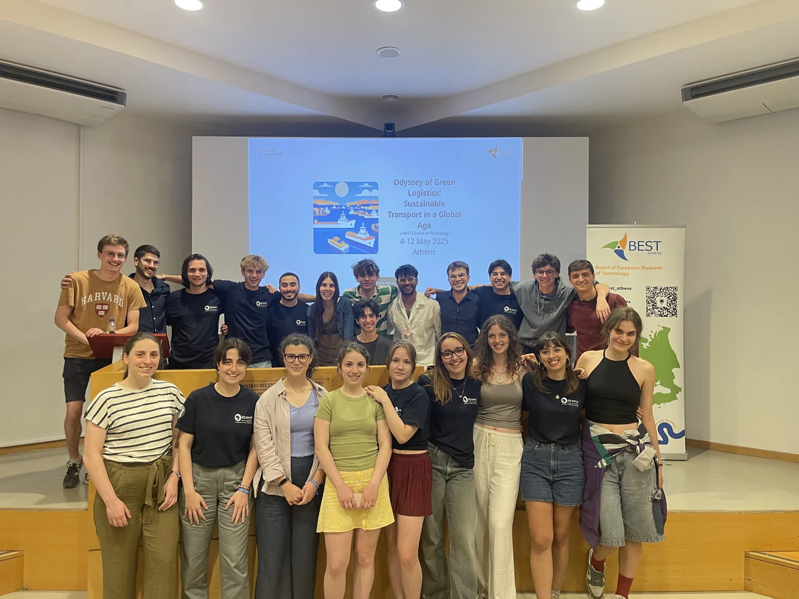
BEST Athens · Sustainable transport
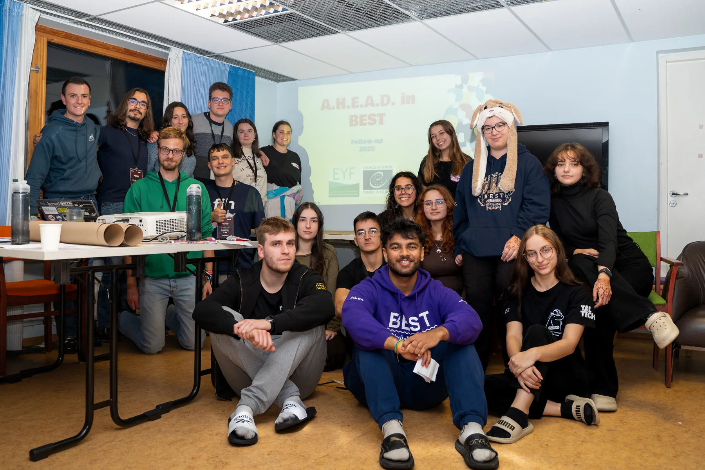
AHEAD in BEST · Advocacy workshop
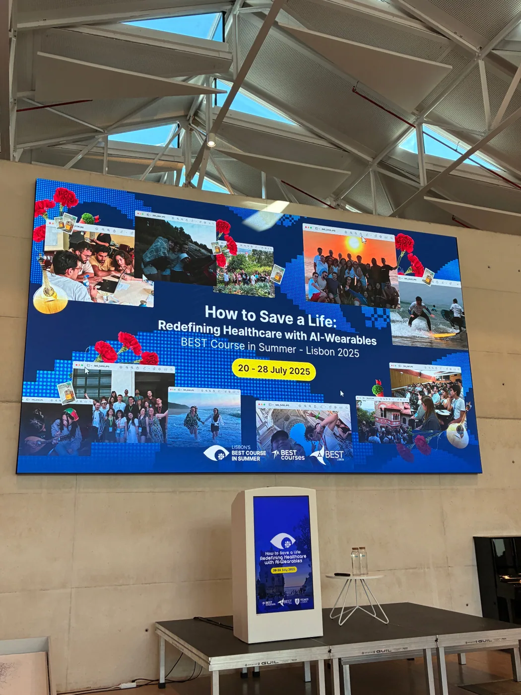
BEST Lisbon · Healthcare and AI
PROJECT SPOTLIGHT / HEALTHCARE ML
FeelAI
— exploring emotion through signals.
Using smartwatch heart-rate (HR) and electrodermal response (EDR) data to explore emotion classification. Developed with an international BEST team in Lisbon, the poster reports 64.24% test accuracy. Exploratory research, not a clinical diagnostic product.
At a BEST course in Ljubljana, I presented and discussed futuristic manufacturing concepts, including emerging solar-cell technologies and their potential applications.
CURIOSITY IN MOTION
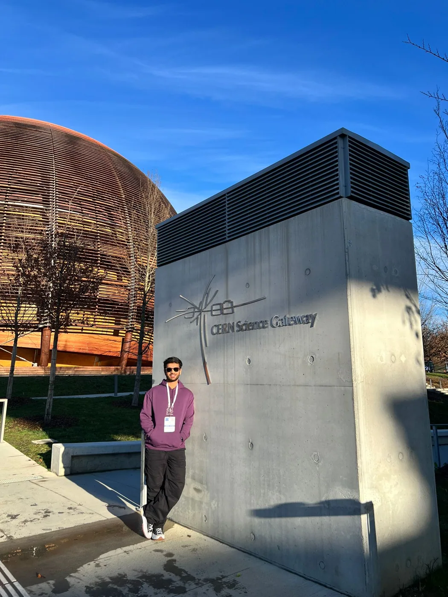
Exploring science beyond the classroom.
Visits and exposure to research environments including CERN, DESY, and the Dr. Karl Remeis Observatory broadened my perspective on astronomy, instrumentation, and scientific collaboration.
COMMUNITY ACTION / INDIA
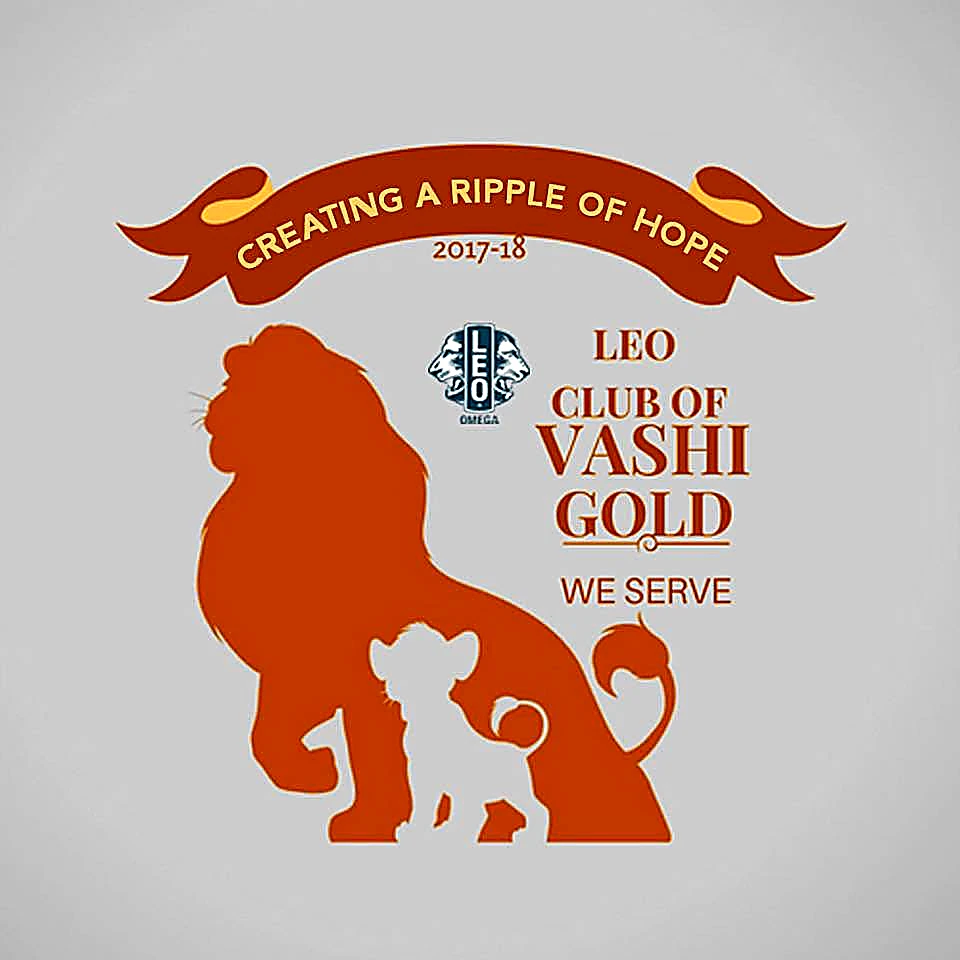
Leo Club of Vashi Gold
Led initiatives connecting community service, environmental responsibility and local opportunity in Mumbai and Navi Mumbai.
Leoland 2022 / Techgraphy:
Head of Department; supported small business ventures and emerging artists (April 2022).
Clothes donation:
chaired a drive distributing over 500 clothing items (February 2022).
Milk Bag Project:
chaired collection of over 1,000 used milk bags to promote plastic-waste awareness and recycling (November 2021).
Water conservation:
led awareness outreach in local communities and housing societies (October 2021).
ENVIRONMENTAL AWARENESS / SCHOOL YEARS
Environmental conservation with TERI
Participated in environmental-conservation activities associated with TERI during my school years. This early experience helped develop an interest in sustainable practices and community engagement.
COMING NEXT / PROJECT LAB
A space for new experiments.
Interactive simulations, scientific visualizations and small engineering explorations will join this portfolio over time.
✺
SELECTED EXPERIMENTAL PHYSICS / FAU
Advanced Lab Course
research notebook.
A selection of experiments carried out with Kavan Purohit, combining physical instrumentation, experimental measurements, calibration, and analysis. These are academic laboratory projects, separate from my independent master’s research.
EXPERIMENT 01
◉
FAU · ADVANCED EXPERIMENTAL PHYSICS
Gamma spectroscopy
Detector response, energy calibration and gamma spectral analysis.